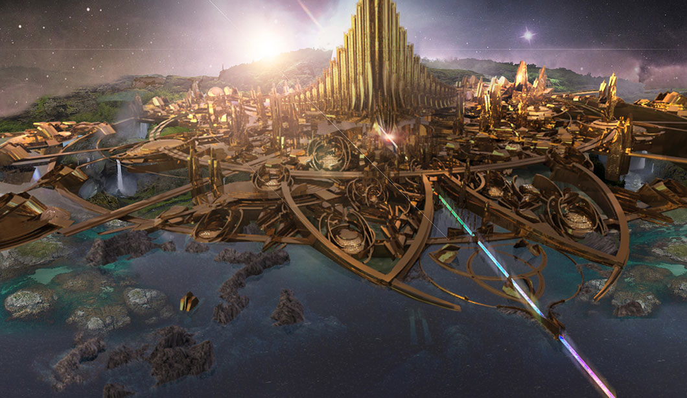

ODIN est une divinité et un super-héros évoluant dans l'univers Marvel de la maison d'édition Marvel Comics. Créé par l’éditeur Stan Lee et le dessinateur Jack Kirby, le personnage de fiction apparaît pour la première fois dans le comic book Journey into
